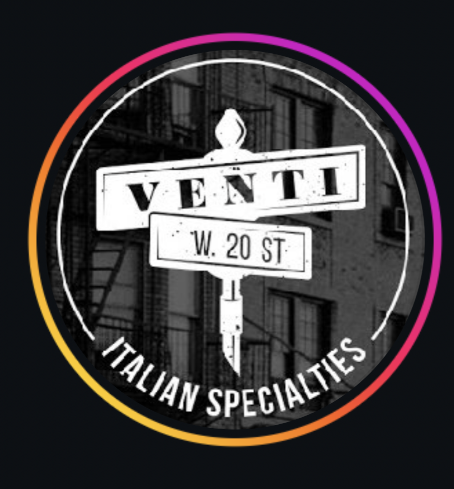

Made here, dailyFresh mozzarella.




Fresh mozzarella is part of the daily rhythm at Venti. It is layered into cutlet sandwiches and melted into chicken parm.
Find it on the menu ↗For office lunches and gatherings, call the deli to ask what Venti can make for your group.
Call (201) 685-7261 ↗